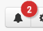

Cority provides functionality for a Management Referral workflow that integrates the Appointments and Case Management modules to make it easy for:
- a manager to refer an employee to a clinic
- the clinician(s) to address and carry out the referral and any clinic visits
- the manager and clinician(s) to communicate throughout the process.
Related fields and actions must be added to custom form layouts. For more information, see Using the Management Referral Workflow. Please contact your system administrator for further information.
Note: This new workflow only applies if the Schedule Entry is linked to the Clinic Visit module, because of its connection to the Case Management module through the case number; if the Schedule Entry is connected to any module other than Clinic Visit, then the workflows remain as before.
Cority also provides functionality to set up Telehealth/Zoom appointments. For more information, see Telehealth/Zoom Appointments.
You can schedule activities in any of the schedule views except List view.
In the Occupational Health menu, click Appointments.
Change the view if necessary to display the desired date. All of the views, except Month, show each hour divided into the time slots as defined in your Appointment Settings (see Setting Up the Calendar). Note that changing the slot duration only affects the display — you can schedule an activity for any period of time.
Use the Availability Finder to locate the next open timeslot that meets specific criteria; see Finding an Available Timeslot below.
Optionally, filter the schedule to only show the desired Scheduling User’s appointments (see Choosing Which Appointments to View).
Click New above the calendar and choose Appointment, or click in the time slot where you want to add the appointment (or click and drag to create an appointment block; note that the start time will round down so you don’t have to be exact).
To copy an existing appointment, open the appointment and choose Actions»Copy, choose the employee name, and change any of the other details as required.
If you created the appointment on the Master view by clicking in a timeslot, the Scheduling User defaults to the scheduling user for that row.
If you created the appointment on the Master view by clicking New, or if you created the appointment on any other view, the Scheduling User defaults to the Default Practitioner in My Settings. If a Default Practitioner is not defined in My Settings, the Scheduling User will be blank.
Enter data in the fields of the Schedule Entry form. The fields are self-explanatory, but note that:
The appointment Time defaults to the time slot you clicked to add the appointment, but you can change this. If you created the appointment on the Month view, you must enter the appointment Time.
A business rule (BR-100640) can warn if you are about to double-book someone for an appointment. This applies across multiple health centers. This rule must be activated to function.
If the Duration is not populated based on the selected Activity, it defaults to the schedule’s Slot Duration, but you can change this.
When a scheduling user who is not a practitioner opens the Activity list, it will be limited to activities marked (in the ScheduleActivity look-up table) as Non-Medical Activity and whose Type is not “Exam Activity Only”.
An Additional Activities section may be added to a custom layout; this section allows you to schedule multiple activities in the same appointment. The Duration will display the total of all selected activities. If the scheduled activity is linked to an SEG, the SEG’s recall activities are listed here (but you can add or delete any as required). A system setting can require that all linked activities must be completed before the schedule entry can be marked as Completed.
The Status field indicates whether the employee for whom the activity was scheduled failed to arrive (no show), arrived or rescheduled.
If the test was completed on the scheduled date in an external module, e.g. an audiogram was marked as complete in the Audiometric Testing module, the Completed checkbox is automatically selected.
To set this appointment up as a recurring appointment for the same patient and activity, choose Actions»Recurrence (this option appears when you save data).
Select the frequency of occurrence - Daily, Weekly, Monthly, or Yearly. The pattern options will change depending on the frequency option selected. To clear your settings, choose Actions»Return to Default Settings.
Specify how long the recurring appointments should last (either a specific number of occurrences, or an end date).
When you are finished, choose Actions»Create Recurrence Appointments. The recurring appointments will appear in the schedule according to the frequency pattern specified.
To send an email notification about this appointment, in the Send Email field select “Including Activity and Notes” or “Including Activity as Clinic Visit and Excluding Notes” if you want to omit the reason. Three new checkboxes appear, allowing you to indicate who should receive the email (the Scheduling User, Employee, and/or Supervisor). The email(s) are sent when the appointment is saved. If the appointment is part of a series, the recipient will only receive one email for the entire series. These notification emails are treated the same as regular meeting requests: the recipient(s) can accept the meeting (appointment) directly into their mail service (such as Outlook), or reject the request. To resend the email(s) later, or to send an email to a recipient who was not selected earlier, select the appropriate recipient(s), then choose the appropriate Send Email action from the Actions menu.
Email notifications are listed on the Tracking Status Log. For more information, see Monitoring Email Notifications below.
You can send a reminder letter instead of, or in addition to, an email notification or To Do list reminder: choose Actions»Generate Reminder Letter. For more information, see Generating a Letter.
Cority provides functionality to change the message that is emailed when an appointment is scheduled and whenever the appointment is updated. This involves a custom business rule action and template selections in the schedule entry:
- There is a BRA that is a copy of the hard coded message. This BRA can be cloned to reflect your email template requirements.
- A system setting tied with scheduling must point to the new custom BRA instead of the default BRA.
- On the Schedule Entry, select "Use Email Template" in the Send Email field and use the Send Email Template action.
The email sent by the BRA will include the .ics calendar file.
Please contact your system administrator for further information.
Click Save.
If you selected yourself as the Scheduling User, and sent email To Scheduling User, the appointment is assigned a tracking status of “Self”. These can be viewed in the Tracking Status Log.
When scheduling recall activities such as a second immunization, you can link directly to modules that are associated with the recall activity. To link to an associated module, choose Actions»Link. A data entry form for the module you’re linking to opens. For example, if you select Immunization as the activity, the entry is linked to the Immunizations form. Activities and the modules they are linked to are defined in the ScheduleActivity look-up table.
If the selected status code is defined with the Arrived checkbox selected (in the ScheduleStatus look-up table), the arrival time is carried over to the Clinic Visit when linked to from Scheduling.
Tip Your administrator can set up a business rule that updates the status or other attributes of the clinic visit record when the schedule entry is updated, or vice versa.
If the activity’s reference type is Clinic Visit, you can also link the activity to the employee’s clinic visit list -- choose Actions»Link to Clinic Visit List.
To schedule another activity for the same user, click New. All information other than the name of the user and the date is cleared from the screen. The original entry is automatically saved.
You can search for available timeslots that meet your criteria, e.g. within a specific date range or for one or more activities, on the Availability Finder tab (this tab must be enabled by a system setting).
To find a list of timeslots, open the Availability Finder tab. In the panel on the right, indicate any combination of criteria for the timeslots you are looking for: Health Center, Date Range, Activities, and/or Scheduling Users (this list of users is filtered to those linked to the selected Health Center). You can select multiple health centers for a practitioner; if the practitioner’s (provider’s) availability is not configured for a selected health center, no timeslots will be displayed for that health center.
The panel on the left shows the dates that contain timeslots that match the criteria. Click on a slot to complete the Schedule Entry as described above.
Notes:
Configuration Best Practices:
Each time an appointment is scheduled with email notifications sent, a record for each recipient is added to the Tracking Status Log with a status of “No Response”. If the “Synchronize Appointments” system setting is enabled, the status of each record will be updated when the recipient provides a response.
For Gmail users, in addition to the standard appointment email responses (Accept, Decline, Tentative, No Response, etc.), there are two additional inbound notification statuses:
If you are sending emails from a shared email box, the Tracking Status Log will provide the response status received to that email address provided the following system settings are set up:
- Cority Notification System Email
- Cority Notification System Email Password
- Always use 'Cority Notification System Email'' system setting value for the 'From' email property
You can identify appointments that have been created by and for a specified scheduling user by viewing appointments with a status of “Self”.
A business rule may be set up that will update an appointment’s schedule status based on a response from Microsoft Outlook.
Click to view this log. The icon displays a red alert when there are new unread incoming messages. Once you open the log the alert disappears.

Incoming messages are marked as Read when they are displayed on the log; if there is more than one page of notifications, any unread messages on subsequent pages are still considered unread. You can either switch to the Unread view (which will then change them to Read), or choose Actions»Mark All as Read.
The default view shows Declined appointments, but you can change the view to a different status or view All. You can also filter the list to recipient Role (i.e. only messages sent to an Employee, Scheduling User, or Supervisor), or look for a particular Appt Date or Activity.
Click a Recipient link to view the schedule entry, for example to reschedule a Declined appointment after discussing alternate dates/times with the recipient.
This log only displays notifications sent when an appointment was scheduled; it does not include any notifications sent automatically by the Cority Email Notification Utility to alert employees that they are due for recall activities. To view those, see Entering a Schedule Recall Notification Record.